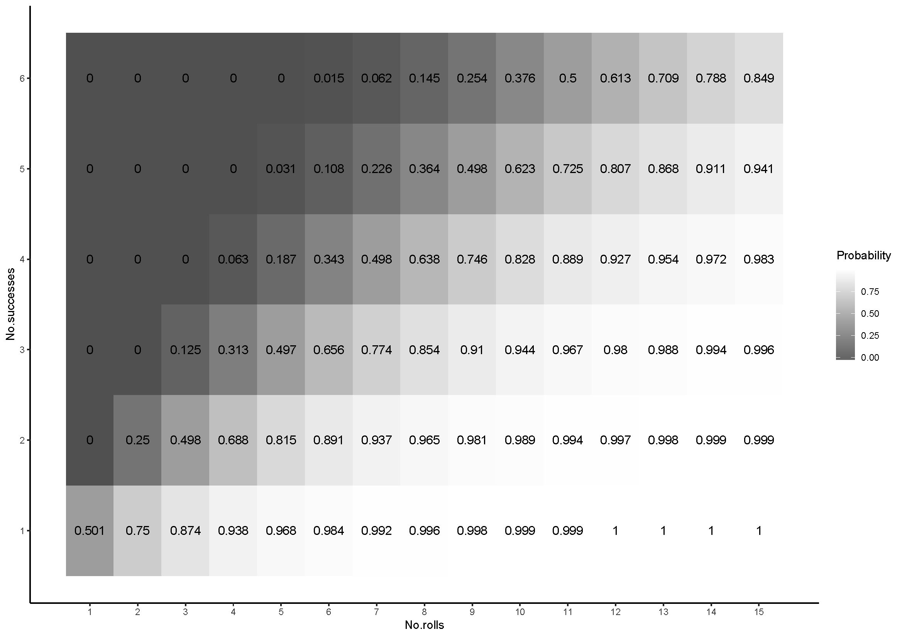

Having now played Lady Blackbird with my game group, I still can’t quite wrap my head around its interesting skill/dice mechanic. A character in the game has 4 traits that describe something about the character (e.g. they’re a detective, they’re cunning, they’re a country girl), and each trait then has a set of tags of characteristics related to that trait (e.g. a detective might be perceptive, have a gun, have authority). When the player meets a challenge, they say how they want to approach the challenge and the game master sets a challenge level (1-6), as the number of 4-6’s that need to be rolled to to succeed. The more needed, the higher the difficulty.
Following this, the player choose a trait that is relevant to the challenge (e.g. a cunning character could talk their way out of a fight), and any tags under that trait which could help. The number of tags is the number of dice you get to roll. After this, the players have a finite pool of dice that they can add to try and get enough to roll and succeed.
So there’s a strange negotiation that happens with every dice roll that you don’t see in other games which kind of grinds the game to a halt. On top of that, the maths behind success rates become more counter intuitive as the number of 4-6’s needed increases.

Ended up spending far more time that I should have working out the best strategies for dice rolls in the game.
I’d definitely play it again, as, despite it’s simplicity, we probably spent more time discussing the weirdness of the games mechanics much more than with any other game.
I’ve also been playing around with swapping out this simple webpage with a much more advanced version in Blogdown, but for the life of me I’ve not been able to get it to work for anything. Maybe future Tom will have more luck, but for now I’m stuck with this thing. I’ve also heard Jekyll is worth it for a github page, but I’m enjoying doing everything in R at the moment and would rather not switch. Hopefully Boryana will be able to show me the right path to go down on Wednesday when she makes everything seem much simpler.